家宝
家宝とは、「孫氏」「蜻蛉切」などといった、家宝のことです。
家宝と一言で言っても３つの概念で構成されます。
-
家宝
家宝という抽象的なカテゴリの概念。
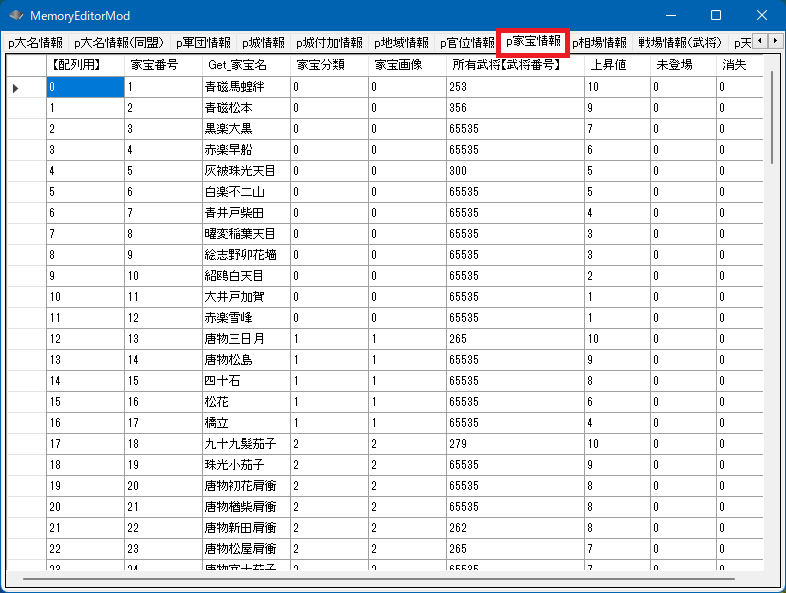
-
「p家宝情報」という配列
家宝の一覧リストに相当する「家宝の配列」の概念。

-
p家宝情報[ix] (0 <= ix < 家宝の総数)
家宝の配列のうち、どれか１つの家宝
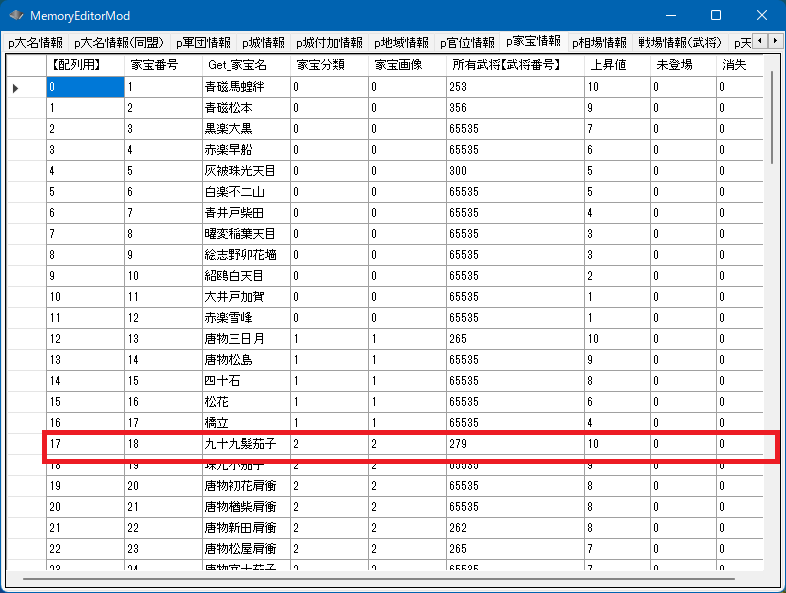
家宝とは、「孫氏」「蜻蛉切」などといった、家宝のことです。
家宝と一言で言っても３つの概念で構成されます。
家宝という抽象的なカテゴリの概念。
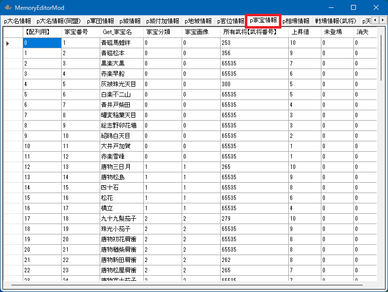
家宝の一覧リストに相当する「家宝の配列」の概念。
家宝の配列のうち、どれか１つの家宝
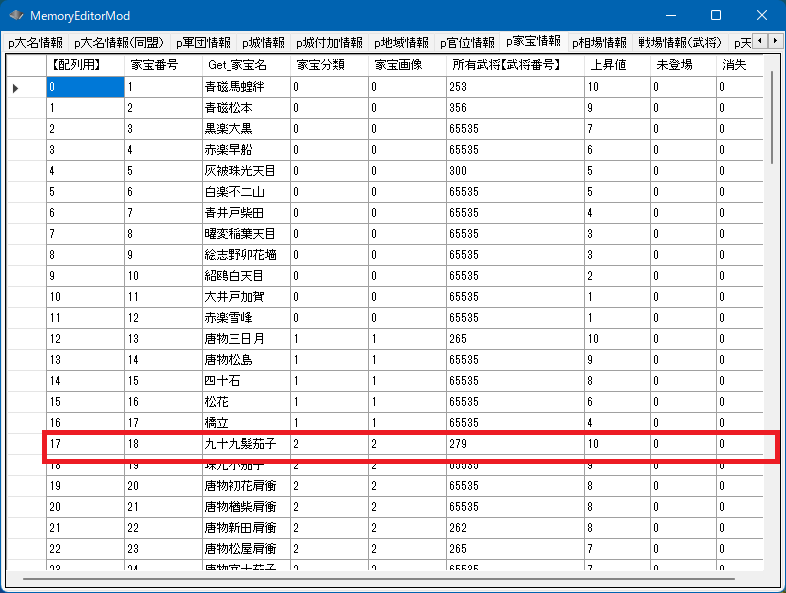
void カスタム::On_プレイヤ担当ターン《メイン画面》() {
int iKahouID = 家宝配列番号::九十九髪茄子;
int iBushouID = p家宝情報[iKahouID].所有武将【武将番号】 - 1;
デバッグ出力 << "家宝番号【配列用】:" << iKahouID << "の" << Get_家宝名(iKahouID) << "は..." << endl;
// 武将番号【配列用】の範囲なら
if (0 <= iBushouID && iBushouID < 最大数::武将情報::配列数) {
デバッグ出力 << Get_名字(iBushouID) + Get_名前(iBushouID) << "が所持しています" << endl;
}
else {
デバッグ出力 << "誰も所持していません" << endl;
}
}
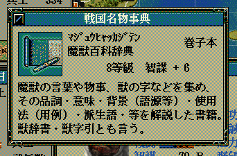
void カスタム::On_プレイヤ担当ターン《メイン画面》() {
int iKahouID = Get_家宝番号【配列用】("魔獣百科辞典");
if ( 0 <= iKahouID && iKahouID < 最大数::家宝情報::配列数) {
int iBushouID = p家宝情報[iKahouID].所有武将【武将番号】 - 1;
デバッグ出力 << "家宝番号【配列用】:" << iKahouID << "の" << Get_家宝名(iKahouID) << "は..." << endl;
// 武将番号【配列用】の範囲なら
if (0 <= iBushouID && iBushouID < 最大数::武将情報::配列数) {
デバッグ出力 << Get_名字(iBushouID) + Get_名前(iBushouID) << "が所持しています" << endl;
}
else {
デバッグ出力 << "誰も所持していません" << endl;
}
}
}
特定の武将が家宝を所持するかは、上述の「特定の家宝からそれを所持する武将を求める」と同様の処理となります。
void カスタム::On_プレイヤ担当ターン《メイン画面》() {
int iBushouID = Get_武将番号【配列用】(顔番号::長尾景虎);
if (0 <= iBushouID && iBushouID < 最大数::武将情報::配列数) {
for (int iKahouID = 0; iKahouID < 最大数::家宝情報::配列数; iKahouID++) {
// 家宝の「所持武将【武将番号】」→「武将番号【配列用】」 に直したものと一致するなら所持者
if (iBushouID == p家宝情報[iKahouID].所有武将【武将番号】 - 1) {
デバッグ出力 << "上杉謙信は..." << Get_家宝名(iKahouID) << "を所持しています" << endl;
}
}
}
}
家宝名の所持者を変更するには、専用の関数が用意されています。
bool Set_家宝所有者変更(int 家宝番号【配列用】, int 宛先武将番号【配列用】)
家宝の所有者を変更した場合は、その家宝は「未登場」や「消失」フラグが消滅し、登場することとなります。
void カスタム::On_プレイヤ担当ターン《メイン画面》() {
int iBushouID = Get_武将番号【配列用】(顔番号::長尾景虎);
int 上杉謙信の持ってる最高の家宝 = -1;
if (0 <= iBushouID && iBushouID < 最大数::武将情報::配列数) {
// 古事記を上杉謙信に
Set_家宝所有者変更(家宝配列番号::古事記, iBushouID);
}
}
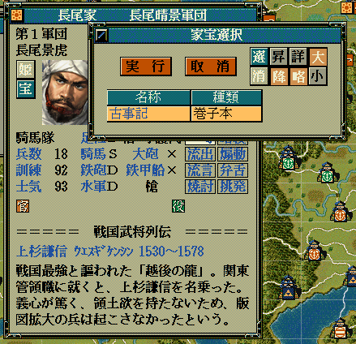
void カスタム::On_プレイヤ担当ターン《メイン画面》() {
int iBushouID = Get_武将番号【配列用】(顔番号::長尾景虎);
int 上杉謙信の持ってる最高の家宝 = -1;
if (0 <= iBushouID && iBushouID < 最大数::武将情報::配列数) {
int iKahouID = Get_家宝番号【配列用】("魔獣百科辞典");
if (0 <= iKahouID && iKahouID < 最大数::家宝情報::配列数) {
// 魔法百科事典を上杉謙信に
Set_家宝所有者変更(iKahouID, iBushouID);
}
}
}
家宝自体のパラメータを変更する際には、商人に返上してから行うと武将の能力反映を考慮しいなくて良いため安全です。
void カスタム::On_プレイヤ担当ターン《メイン画面》() {
int iBushouID = Get_武将番号【配列用】(顔番号::長尾景虎);
for (int KahouID = 0; KahouID < 最大数::家宝情報::配列数; KahouID++) {
// 所持者が長尾景虎と一致した
if (iBushouID == p家宝情報[KahouID].所有武将【武将番号】 - 1) {
// 家宝を商人に返上
Set_家宝所有者変更(KahouID, 0xFFFF);
}
}
}
string Get_家宝名(int 家宝番号【配列用】)
家宝名の取得については、すでに何箇所かで記載があるので問題はないことでしょう。
void Set_家宝名(int 家宝番号【配列用】, string 家宝名)
void カスタム::On_メインゲーム開始() {
Set_家宝名(家宝配列番号::蜻蛉切, "トンボキリ");
}
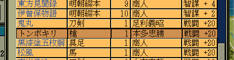
p家宝情報[ix].家宝画像
家宝画像::茶碗 ～ 家宝画像::香木 の値を入れることが出来ます。
これは画像の変更だけを行います。
void カスタム::On_メインゲーム開始() {
if (p家宝情報[家宝配列番号::タバコ].家宝画像 == 家宝画像::煙草) {
p家宝情報[家宝配列番号::タバコ].家宝画像 = 家宝画像::地球儀;
}
}
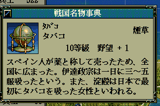
void カスタム::On_プレイヤ担当ターン《メイン画面》() {
番号リスト型 家宝リスト;
for (int KahouID = 0; KahouID < 最大数::家宝情報::配列数; KahouID++) {
if (p家宝情報[KahouID].家宝画像 == 家宝画像::槍) {
家宝リスト.push_back(KahouID);
}
}
int iSelectedKahouID = 選択家宝ダイアログ表示(家宝リスト);
if (0 <= iSelectedKahouID && iSelectedKahouID < 最大数::家宝情報::配列数) {
デバッグ出力 << Get_家宝名(iSelectedKahouID) << "が選択されました" << endl;
}
else {
デバッグ出力 << "家宝は選択されませんでした" << endl;
}
}
p家宝情報[ix].上昇値
bool Set_家宝上昇値(int 官位番号【配列用】, int 上昇値)
void カスタム::On_メインゲーム開始() {
for (int iKahouID = 0; iKahouID < 最大数::家宝情報::配列数; iKahouID++) {
// 上昇値が5以上のものを
if (p家宝情報[iKahouID].上昇値 > 5) {
// 10上昇に
Set_家宝上昇値(iKahouID, 10);
}
}
}
家宝分類とは家宝の種類のことで、この種類によって「政治・戦闘・智謀・野望」のどれが上昇するのかが決まります。
p家宝情報[ix].家宝分類
bool Set_家宝分類(int 官位番号【配列用】, int 家宝分類)
家宝分類::茶碗 ～ 家宝分類::煙草 の値を入れることが出来ます。
void カスタム::On_メインゲーム開始() {
// 家宝分類を変更
if (p家宝情報[家宝配列番号::蜻蛉切].家宝分類 == 家宝分類::槍) {
Set_家宝分類(家宝配列番号::蜻蛉切, 家宝分類::香木);
}
}
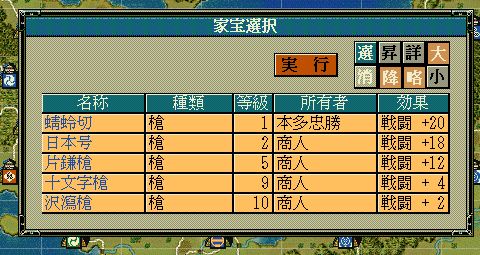
On_家宝種類名表示直前 を利用してください。
未登場とは、外来もしくは香木など、特定の年代やイベントを経るまでは「１」が立っているもので
この値が「1」となると、ゲーム上でも該当家宝は無くなったことを意味します。
原則的にはこの「未登場」を「１」にする際には「消失」を「０」にすることも併せて行ってください。
武将が「未登場の家宝」を持つのは適切ではないため、「未登場」な家宝は商人に持たせるようにしてください。
でこの値を変更しても能力の変化には対応していないため、
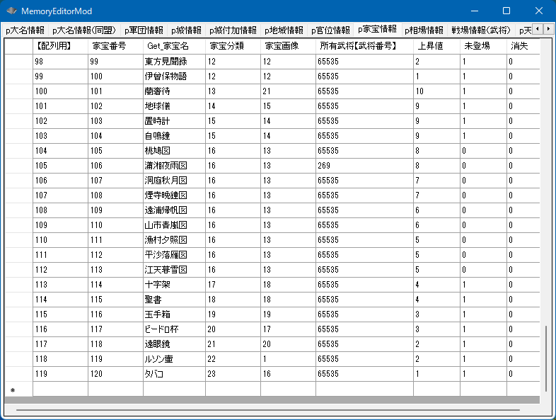
p家宝情報[ix].未登場
void カスタム::On_メインゲーム開始() {
int iKahouID = 家宝配列番号::タバコ;
// まだ登場していない
if (p家宝情報[iKahouID].未登場 == true) {
// 今から登場させるので、商人へと戻す
Set_家宝所有者変更(iKahouID, 0xFFFF);
// 登場させる
p家宝情報[iKahouID].未登場 = false;
// 消失していない
p家宝情報[iKahouID].消失 = false;
}
}
消失とは、該当の家宝が破壊された、などの理由で消失した状態を指します。
この値が「1」の間は、ゲーム内ではその家宝はリスト一覧には掲載となります。
原則的には「消失」を「１」にする際には、「未登場」を「０」にすることも併せて行ってください。
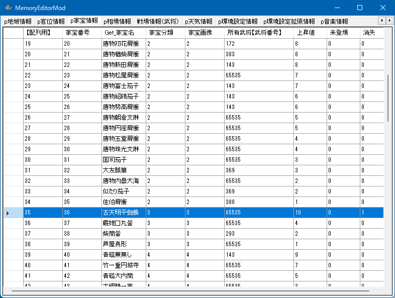
p家宝情報[ix].消失
void カスタム::On_メインゲーム開始() {
int iKahouID = 家宝配列番号::九十九髪茄子;
// 消失していない
if (p家宝情報[iKahouID].消失 == false) {
// 今から消失させるので、商人へと戻す
Set_家宝所有者変更(iKahouID, 0xFFFF);
// 消失するわけだから、一度登場したはず...
p家宝情報[iKahouID].未登場 = false;
// 商人の手元にあるので安全に消失に出来る
p家宝情報[iKahouID].消失 = true;
}
}
「家宝」に関する主な所は以上となります。
詳しくは「家宝情報型.h」や「家宝情報列挙.h」などを参照してください。